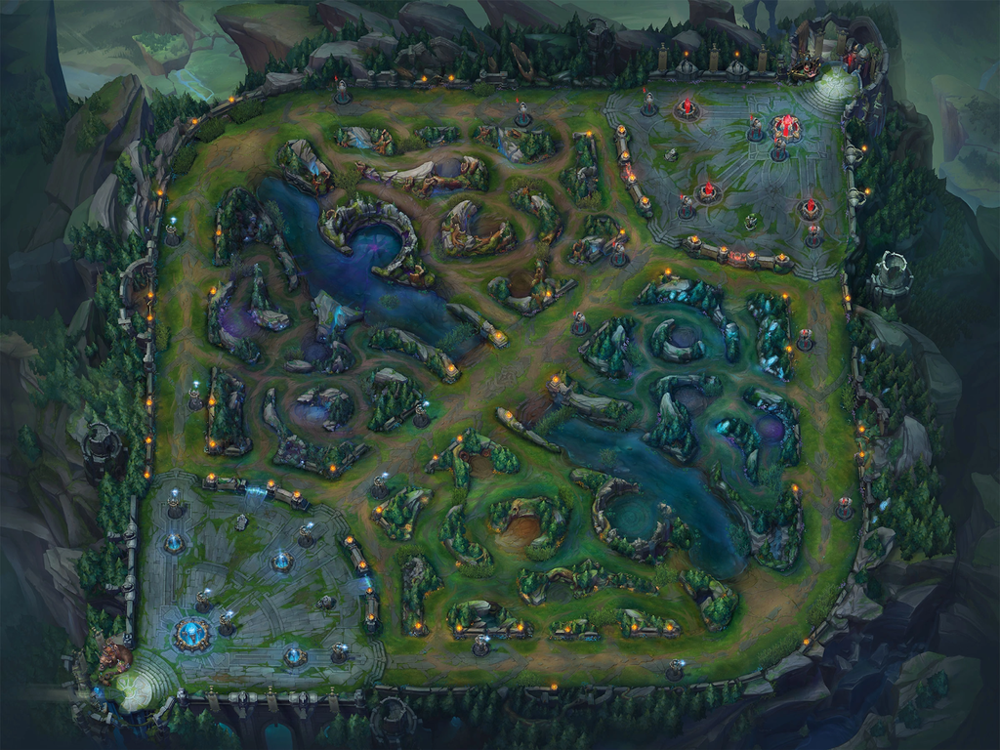
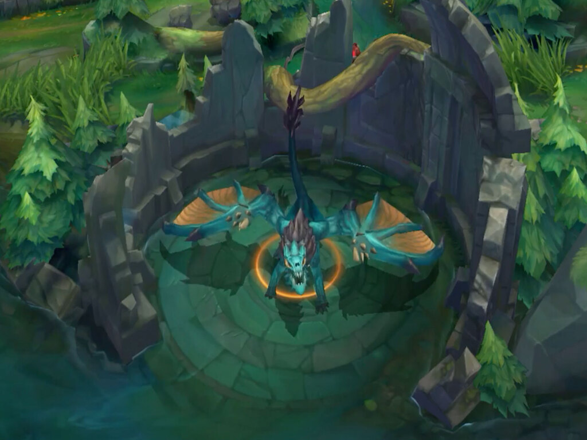
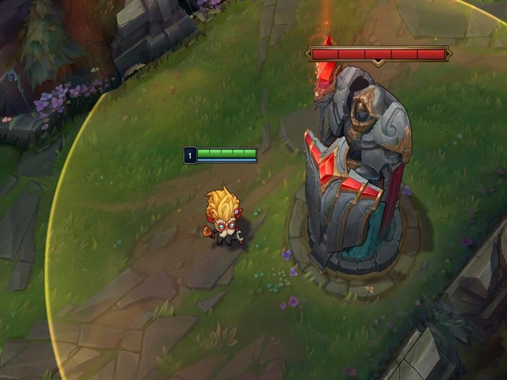
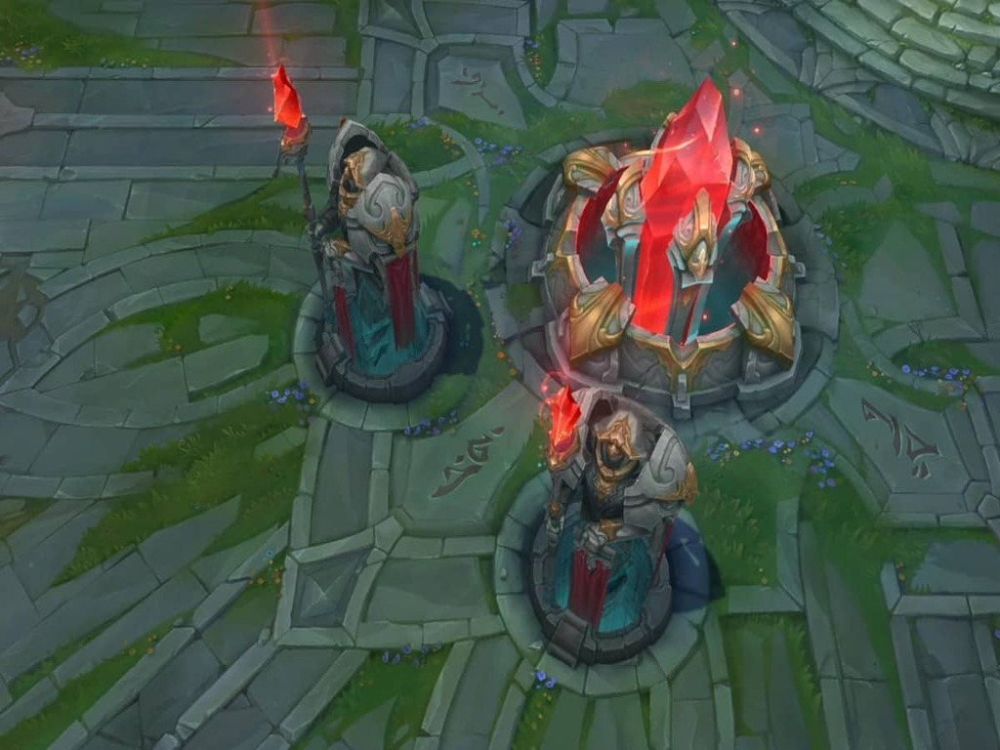
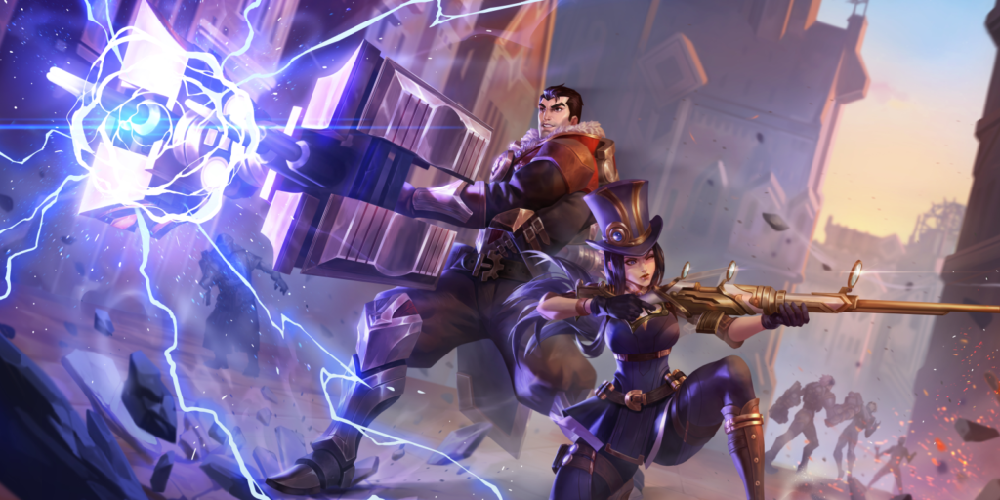

¿Que es Wild Rift?
Sumérgete en Wild Rift: la experiencia MOBA 5v5 de habilidad y estrategia de League of Legends, ahora para dispositivos móviles y consolas. No importa tu nivel, haz equipo con tus amigos y disfruta los nuevos controles y partidas rápidas, confirma tu campeón, y prepárate para hacer tus mejores jugadas
Objetivo de la partida
Elige tu carril
Juega con tu mejor tirador o como soporte en el carril de dúo; arroja hechizos en el carril central, o enfréntate a un peleador en el carril en solitario.
Domina la jungla
En lugar de quedarte en un solo carril, puedes cazar monstruos en la jungla. Mata monstros épicos, como el Barón Nashor o los dragones para desbloquear poderosas mejoraras para tu equipo.
Destruye torretas para llegar al Nexo
En cada carril hay torretas defensivas entre tu equipo y la base enemiga. Derriba estas estructuras y forja tu camino hacia la victoria.
Destruye la base enemiga
El Nexo es el corazón de las bases de ambos equipos. Destruye el nexo enemigo antes de que destruyan el tuyo para ganar la partida.
Galeria de imagenes |
|
|---|---|
 |
|
|  |  |